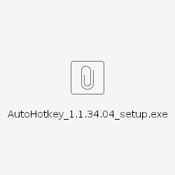

onenote | 2016版本onenote安装及快捷键配置
1 2016版onenote安装
这里之所以强烈推荐安装的2016版onenote的原因如下：
1 OneNote For Windows 10 是阉割版，相对于2016很多关键功能被阉割掉。
2 想要熟练实用onenote作为自己的知识管理工具，高效快捷的搜索查找，表格编辑，格式调整，背景着色等，离不开快捷键的介入，后面讲到的快捷键绑定是基于2016版完成的
3 2016版的配置更加灵活多样，方便个人做定制化调整
1）版本自查
有的同事公司电脑里可能已经默认安装了：
1 2016版onenote
2 OneNote For Windows 10 – UMP中的onenote
自查方法：
win+s 键入onenote,右击onenote图标显示如下图所示(UMP阉割版不会出现类打开文件位置的选项)，即为2016版onenote

2) 安装
如果2016版本的onenote没有安装,,可以在softwarecenter中搜索安装，因为耗时比较久，请务必提前安装好。

2 快捷键绑定 --（可选）
1）通过导入配置文件，完成onenote2016的配置同步
首先现下载该配置文件到本地
OneNote Customizations2022_09_02_2016版.exportedUI
按照下列方式完成onenote配置文件的加载

2）安装autohotkey

3) 下载并点击运行快捷键绑定脚本
下载之后双击执行之后
会在右下角有一个“H”的小图标

建议将该脚本放置在startup(C:\ProgramData\Microsoft\Windows\Start Menu\Programs\StartUp)目录下，这样每次启动电脑时该脚本会被直接运行
4）尝试测试一下快捷键, 重点关注表格处理部分，单元格着色部分，有些电脑因为分辨率的问题可能不能正常工作，需要做简单的调整。具体看step 5)

5) autohotkey单元格着色调整 ( 此步为可选操作，不强制 )
Call with-20221013_152654-Meeting Recording.mp4